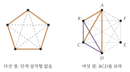

STEP I 1989, 문제 4
계속 읽기 전에 문제를 먼저 읽어 보자. 문제는 STEP Support Programme의 문제 데이터베이스에 있다: step.maths.org/questions/89-s1-q4
도입
여섯 사람이 모인 파티에서는 언제나 서로 모두 아는 세 사람이 있거나, 서로 모두 모르는 세 사람이 있다. 여섯 사람이 누구이든 이것은 반드시 성립한다. 다섯 사람이라면 그렇지 않다. 이 작은 사실은 램지 정리(Ramsey’s theorem)의 첫 번째 경우이며, 현대 조합론 전체를 관통하는 원리 하나를 담고 있다. 그것은 완전한 무질서는 불가능하다는 것이다. 충분히 큰 구조는 어떻게 색칠하거나 배열하든 반드시 고도로 질서 잡힌 부분을 포함한다.
증명은 네 줄이면 된다. 그러나 당연히 이어지는 질문(서로 모두 아는 네 사람이나 서로 모두 모르는 네 사람을 보장하려면 몇 명이 필요할까? 다섯 사람이라면?)은 수학에서 가장 어려운 미해결 문제 몇 가지로 이어진다.
시작하기 전에
여섯 개의 점은 어떤 쌍이 어떤 색으로 이어져 있는지를 통해서만 의미를 가진다. 기하학적 배치는 주의를 흐트러뜨릴 뿐이다. 선분은 모두 몇 개이고, 각 점에서 나가는 선분은 몇 개인가?
선분은 \(\binom{6}{2} = 15\)개이고, 각 점에서 \(5\)개가 나간다. (일반적 위치(general position) 조건은 단지 어느 세 점이든 진짜 삼각형을 이루도록 보장할 뿐이다. 이 문제는 사실 꼭짓점이 여섯 개인 완전 그래프(complete graph) \(K_6\)의 변을 두 가지 색으로 칠하는 문제이다.)
차근차근 풀기
단계 1 선분 다섯 개, 색 두 가지
\(A\)에서 다섯 개의 선분이 나가고, 각각은 금색이거나 은색이다. 이들의 색에 대해 확실히 말할 수 있는 것은 무엇인가?
그중 적어도 세 개는 같은 색이다. 금색이 많아야 두 개이고 은색도 많아야 두 개라면, 선분은 많아야 네 개일 것이기 때문이다. 이것이 비둘기집 원리(pigeonhole principle)이다. 다섯 개의 물건을 두 상자에 넣으면 어느 한 상자에는 적어도 세 개가 들어간다. (필요하면 두 색의 이름을 서로 바꾸어) \(AB\), \(AC\), \(AD\)가 모두 금색이라고 하자.
단계 2 반대쪽 끝을 보라
이제 삼각형 \(BCD\)를 보자. 이 삼각형의 변 중 하나라도 금색이면 어떻게 되는가? 하나도 금색이 아니면 어떻게 되는가?
삼각형 \(BCD\)의 변 중 하나, 예를 들어 \(BC\)가 금색이면 \(ABC\)는 세 변 \(AB\), \(AC\), \(BC\)가 모두 금색이다. \(BCD\)의 어느 변도 금색이 아니면 \(BC\), \(CD\), \(DB\)가 모두 은색이므로 \(BCD\)는 은색 삼각형이다. 어느 쪽이든 단색 삼각형이 존재한다(그림 9.2.1의 오른쪽).■
단계 3 다섯 점으로는 부족하다
점이 다섯 개이면 각 점에는 선분이 네 개뿐이다. 각 점마다 두 색이 정확히 두 개씩 되도록 어떻게 칠할 수 있을까?
다섯 점을 정오각형 모양으로 놓는다(일반적 위치를 원한다면 점들을 평면에서 살짝 들어 올린다). 오각형의 다섯 변을 금색으로, 다섯 대각선을 은색으로 칠한다(그림 9.2.1의 왼쪽). 금색 변들은 길이 5인 순환(cycle)을 이루므로 삼각형을 포함하지 않는다. 은색 변들은 오각별을 이루는데, 이것도 길이 5인 순환이므로 삼각형을 포함하지 않는다. 따라서 단색 삼각형은 없다.■

돌아보기
관계없는 것을 걷어 내라. 공간의 점들은 색칠된 그래프가 되었고, 중요한 것은 변의 색뿐이었다.
비둘기집. 변 다섯 개와 색 두 가지가 같은 색 세 개를 강제했다.
알맞은 대상에 대한 경우 나누기. 금색 변 세 개를 찾고 나자, 그 반대쪽 끝이 이루는 삼각형이 모든 것을 결정했다.
최선성. 오각형은 여섯이라는 수를 더 줄일 수 없음을 보여 준다. 좋은 정리에는 그것이 최선임을 보여 주는 예가 함께 따른다.
숨은 수학
램지 수
램지 수(Ramsey number) \(R(s, t)\)는 \(K_N\)의 변을 금색과 은색으로 어떻게 칠하든 금색 \(K_s\)(\(s\)개의 점으로 이루어진 집합으로, 그 사이의 변이 모두 금색인 것)나 은색 \(K_t\)가 반드시 포함되도록 하는 가장 작은 \(N\)이다. 이 문제는 \(R(3, 3) = 6\)임을 보였다. 여섯 점이면 언제나 성립하고, 오각형은 다섯 점으로는 성립하지 않음을 보여 준다.
프랭크 램지(Frank Ramsey)는 1928년에 이 수들이 항상 존재함을, 즉 모든 \(s\)와 \(t\)에 대해 조건을 만족하는 \(N\)이 있음을 증명했다. 그 증명은 위의 논증을 일반화한 귀납법(induction)이며, \(R(s, t) \leq R(s - 1, t) + R(s, t - 1)\)임을 보여 준다. 그러나 정확한 값을 구하는 것은 엄청나게 어렵다. \[R(3, 3) = 6, \qquad R(4, 4) = 18, \qquad 43 \leq R(5, 5) \leq 46.\] \(R(4, 4)\)의 값은 1955년에 밝혀졌다. 막대한 컴퓨터 탐색에도 불구하고 \(R(5, 5)\)는 아직 알려지지 않았으며, 상계 \(46\)도 2024년에야 증명되었다. 컴퓨터로 \(K_{43}\)의 모든 색칠을 하나하나 확인할 수는 없다. 그런 색칠은 \(2^{903}\)가지로, 우주에 있는 원자의 수보다 훨씬 많다.
램지 이론을 발전시키는 데 누구보다 많은 일을 한 폴 에르되시(Paul Erdős)는 이런 이야기를 즐겨 했다. 외계인이 지구를 침공해, \(R(5, 5)\)의 값을 알려 주지 않으면 지구를 파괴하겠다고 위협한다고 하자. 우리는 모든 컴퓨터와 수학자를 총동원해야 하며, 그러면 그 값을 찾아낼 수도 있다. 하지만 그들이 \(R(6, 6)\)을 요구한다면, 우리는 외계인을 무찌르려고 해야 한다. 에르되시는 또한 1947년에 놀라운 방법으로 \(R(k, k) > 2^{k/2}\)임을 증명했다. 그는 점이 \(2^{k/2}\)개보다 적은 그래프를 무작위로 색칠하면 단색 \(K_k\)를 포함하지 않을 확률이 양수임을 보였다. 따라서 아무도 그것을 만드는 방법을 모르더라도 좋은 색칠은 반드시 존재한다. 이 확률론적 방법(probabilistic method)은 오늘날 조합론에서 가장 강력한 도구 가운데 하나이다.
혼돈 속의 질서
램지 정리에는 친척이 많으며, 모두 같은 생각, 즉 충분히 큰 구조는 질서를 피할 수 없다는 생각을 표현한다. 판 데르 베르던 정리(van der Waerden’s theorem)는 자연수를 유한 개의 색으로 칠하면 한 가지 색으로 이루어진 등차수열(arithmetic progression)이 얼마든지 긴 것이 존재한다고 말한다. 에르되시-세케레시 정리(Erdős–Szekeres theorem)는 서로 다른 \(n^2 + 1\)개의 수로 이루어진 수열은 길이가 \(n + 1\)인 증가하는 부분수열(subsequence)이나 감소하는 부분수열을 포함한다고 말한다. 그리고 램지 자신은 논리학의 질문에 관심이 있었다. 그는 논리적 명제의 참거짓을 판정하는 문제에 관한 논문에서 보조정리(lemma)로서 자신의 정리를 증명했다.
사고 기술
\(kn\)개보다 많은 물건을 \(n\)개의 상자에 넣으면, 어떤 상자에는 \(k\)개보다 많은 물건이 들어 있다.
이 원리는 자명하지만, 잘 쓰는 것은 하나의 기술이다. 핵심은 무엇을 물건으로, 무엇을 상자로 삼을지 고르는 데 있다. 여기서는 한 점에서 나가는 다섯 변이 물건이었고, 두 가지 색이 상자였다. 대학에서 비둘기집 논법은 정수론(무리수를 분수로 근사하기), 해석학(볼차노-바이어슈트라스 정리(Bolzano–Weierstrass theorem)), 그리고 조합론 전반에 등장한다.
더 도전하기
적어도 두 개. \(K_6\)를 두 가지 색으로 어떻게 칠하든 사실은 단색 삼각형이 적어도 두 개 있음을 보여라. (힌트: “이색 각”, 즉 한 꼭짓점을 공유하면서 색이 서로 다른 변의 쌍을 세어라. 금색 변 \(g\)개와 은색 변 \(5 - g\)개를 가진 점은 그런 각 \(g(5 - g) \leq 6\)개의 꼭짓점이다. 단색이 아닌 삼각형은 각각 그런 각을 정확히 두 개 포함한다.)
세 가지 색. \(K_{17}\)의 변을 세 가지 색으로 칠하면 단색 삼각형이 있음을 보여라. (힌트: 어떤 점에는 같은 색의 변이 적어도 여섯 개 있다.)
셋 또는 넷. \(R(3, 4) \leq 10\)임을 보여라. 즉 \(K_{10}\)을 금색과 은색으로 어떻게 칠하든 금색 삼각형이나 은색 \(K_4\)가 있다. (힌트: 한 점에는 금색 변이 적어도 \(4\)개 있거나 은색 변이 적어도 \(6\)개 있다.) 실제로는 \(R(3, 4) = 9\)이다.
단조 부분수열. \(n = 2\)일 때 에르되시-세케레시 정리를 증명하여라. 즉 서로 다른 \(5\)개의 수로 이루어진 수열은 길이가 \(3\)인 증가하는 부분수열이나 감소하는 부분수열을 포함한다. 둘 다 포함하지 않는, 길이가 \(4\)인 수열을 찾아라.
더 읽을거리
Miklós Bóna, A Walk Through Combinatorics (World Scientific). 비둘기집 원리와 램지 이론을 다룬 장.
Ronald Graham & Joel Spencer, “Ramsey theory”, Scientific American (1990년 7월). 두 선도적 연구자가 쓴 대중적인 입문 글.
Noga Alon & Joel Spencer, The Probabilistic Method (Wiley). 에르되시의 방법을 다룬 표준 교재로, 첫 장은 읽기 쉽다.
Paul Hoffman, The Man Who Loved Only Numbers (Fourth Estate). 에르되시의 전기.